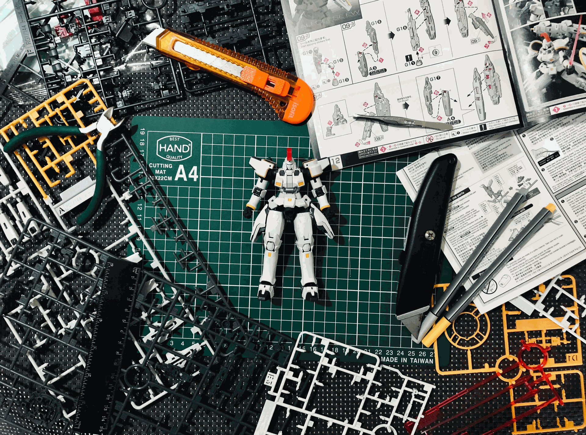
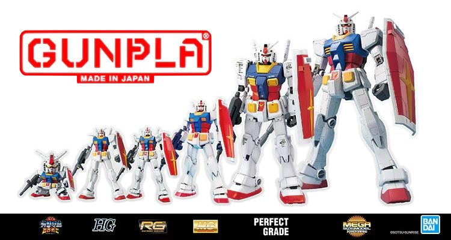
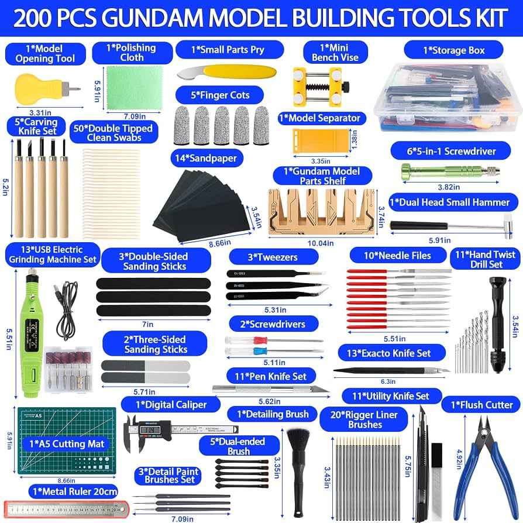

Los Gunplas
¿Qué son los Gunplas?
Los Gunplas son modelos de plástico basados en las unidades de guerra de la serie Gundam

Niveles de Dificultad
Son básicamente 3 dificultades pero se pueden dividir en más
- Principiante
- Intermedio
- Avanzado
Escalas
Los Gunplas vienen en diferentes escalas
Desde los más chicos sin definir, hasta los más grandes
- 1/144: Siendo el más común en modelos principiante, intermedio
- 1/100: Este es modelo un poco más grande y detallado, para usuarios Intermedios-Avanzados
- 1/60: Este es el modelo más grande y detallado, enfocado para usuarios Avanzados
- 1/48: Este ya es el modelo más grande "estándar" y son sencillos de armar
- No definidos: Acá pueden ir los SD ya que son modelos más pequeños y chibis
Tipos de Gunplas
Existen varios tipos de Gunplas, cada uno tiene sus propias características y nivel de dificultad, pero podemos clasificarlos por su diseño, funcionalidad y complejidad
Los tipos de Gunplas más comunes son:
- SD (Super Deformed): Son modelos más pequeños y chibis, con un diseño más caricaturesco y simplificado. Son ideales para principiantes y coleccionistas que buscan figuras adorables.
- HG (High Grade): Son modelos de nivel intermedio, con un buen equilibrio entre detalle y facilidad de construcción. Son populares entre los aficionados que buscan una experiencia de construcción satisfactoria.
- MG (Master Grade): Son modelos más grandes y detallados, con una mayor complejidad en su construcción. Están dirigidos a modelistas avanzados que buscan un desafío y un alto nivel de detalle.
- PG (Perfect Grade): Son los modelos más grandes y detallados, con una complejidad extrema en su construcción. Están destinados a modelistas expertos que buscan la máxima calidad y realismo en sus Gunplas.

Herramientas
Para armar un Gunpla, se necesitan algunas herramientas básicas, son muchas, pero al menos las principales por orden de prioridad son:
- Nipper: Para cortar las piezas del molde de plástico.
- Lima o lija: Para suavizar los bordes y eliminar rebabas.
- Pinzas: Para sujetar y manipular las piezas pequeñas.
Cabe destacar que existen muchas herramientas extras para poder personalizar tu Gunpla como gustes, desde pinceles, hasta pinturas y muchas cosas más.

Conclusión
En resumen, los Gunplas son figuras de acción que ofrecen una amplia variedad de opciones en términos de escalas, tipos y niveles de dificultad. Ya sea que seas un principiante
o un modelista avanzado, que puedes personalizar como gustes, hay un Gunpla perfecto para ti. =3